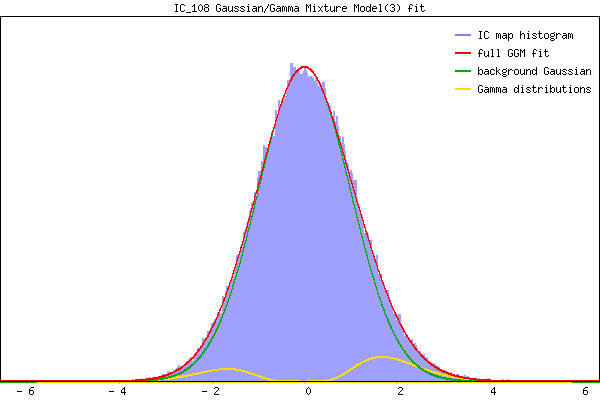

Component 108 Mixture Model fit


IC_108 Mixture Model fit
Means : 0.000000 1.951645 -1.891700
Vars : 1.000000 0.522400 0.426828
Prop. : 0.927847 0.049279 0.022875
This page produced automatically by MELODIC Version 3.15 - a part of FSL - FMRIB Software Library.